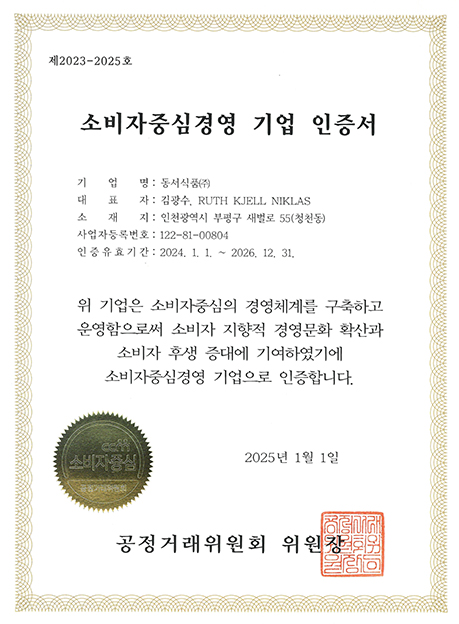
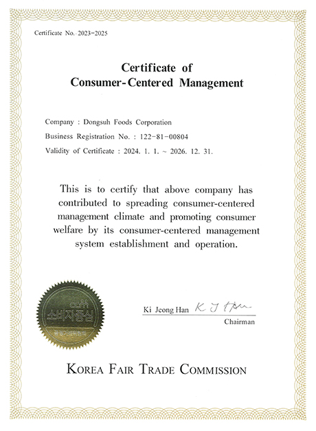

home > 고객의 소리 > 소비자중심경영
소비자중심경영
Scholarship Program
energy_program_saving
소비자중심경영(CCM) 인증이란?
소비자중심경영(Consumer Ceentered Management, CCM)은
소비자의 권익을 보호하기 위해 기업이 수행하는 모든 활동을 소비자관점에서 소비자 중심으로 구성하고,
관련 경영활동을 지속적으로 개선하고 있는지를 평가하는 국가공인인증제도입니다.
- 소비자중심경영(CCM)의 목적과 기대효과
- CCM 인증제도는 기업 및 기관의 소비자 지향적 경영문화 확산과 소비자 권익 증진 노력을 통한 경쟁력 강화 및 소비자 후생증대에 기여함을 목적으로 합니다.

동서식품 소비자중심경영(CCM)인증 획득
동서식품은 2021년 소비자중심경영(CCM)을 위한 선포식을 개최했고, 2021년, 2023년 심사 결과 2회 연속 인증을 획득했습니다.

